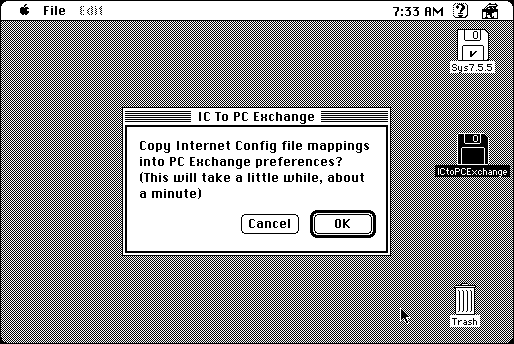

Download
ictopcexchange-100.zip (53K) ICtoPCexchange 1.0 repackaged into a zipped hfs disk image and checksum file. The disk image can be mounted with Mini vMac.
ictopcexchange-100.sit (53K) ICtoPCexchange 1.0 in the original format.
copyright: Stairways Software Pty Ltd.
mod date: Feb 16, 1996
license: free for non-commercial use
from url :
Stairways Files
“To take the file mappings from Internet Config and insert them into the preference files of PC Exchange.” By Mark Tearle.

If you find these downloads useful, please consider helping the Gryphel Project, which hosts them.
Here are the md5 checksums for the downloads, signed with Gryphel Key 5:
--------- GRY SIGNED TEXT --------- d18c4682d39b4d93342d24e0c7fa57a1 ictopcexchange-100.zip fc4342232db1045f99a745de237eb6b6 ictopcexchange-100.sit ------- BEGIN GRY SIGNATURE ------- Gry/4Xa8CFcUzxdN/Lq0KqTSdFgxH+x7cIVcbsHLgwIa8IOLXvhJMxwQUOWiYDcv bM3pUTsEsbrf1rBUPk+J70Zm3UXJjGUIssS+s6C40CCM2tDhtm++6e60QfdRDfDI Trd7PtGJRA7ECAQN+9kqHSeB9y3q20cQS6eeC49VSPo2zm4tmW1yy4uOUR60wPTK -------- END GRY SIGNATURE --------